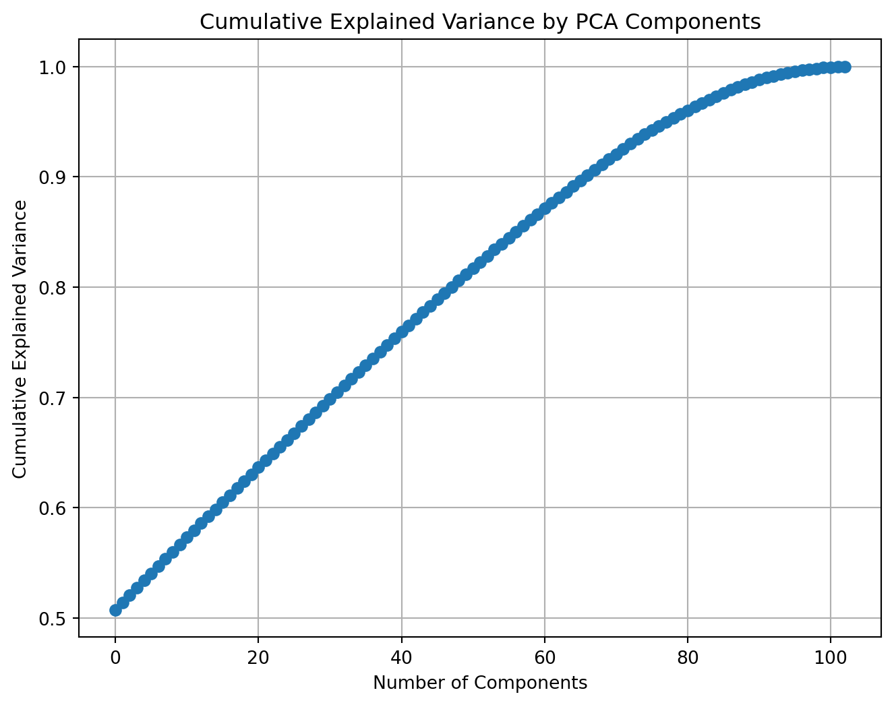
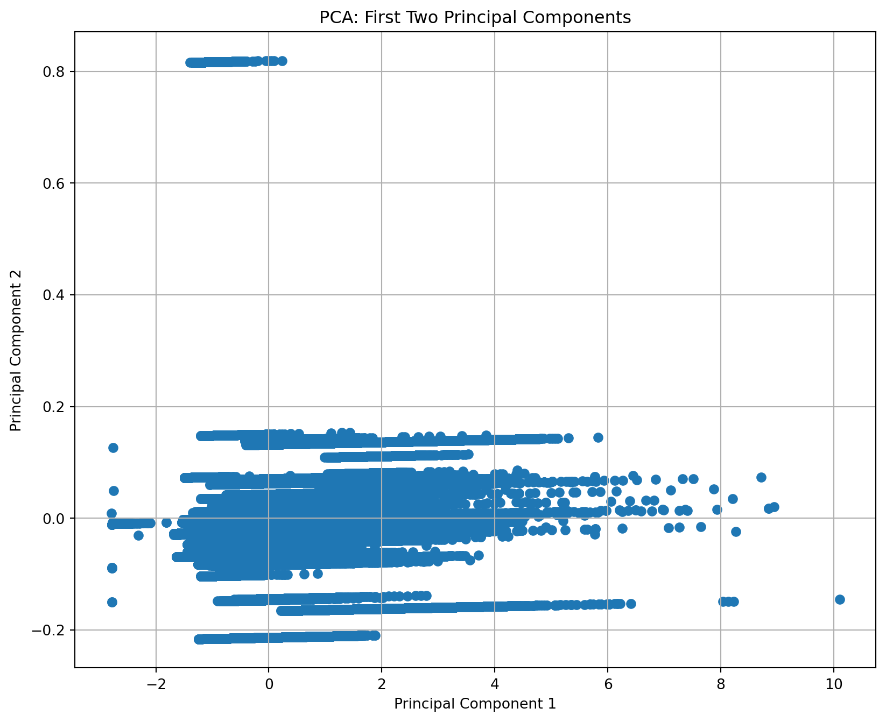

import torch
import pandas as pd
import matplotlib.pyplot as plt
import seaborn as sns
from sklearn.decomposition import PCA
from sklearn.manifold import TSNE
from sklearn.preprocessing import OneHotEncoder, StandardScaler
import warnings
warnings.filterwarnings('ignore')Reduction
Dimensionality Reduction with PCA
This data set is about radiation reading in different state around the US, and the columns are LOCATION_NAME, SAMPLE COLLECTION TIME,DOSE EQUIVALENT RATE (nSv/h),GAMMA COUNT RATE R02 (CPM),GAMMA COUNT RATE R03 (CPM),GAMMA COUNT RATE R04 (CPM),GAMMA COUNT RATE R05 (CPM),GAMMA COUNT RATE R06 (CPM),GAMMA COUNT RATE R07 (CPM),GAMMA COUNT RATE R08 (CPM),GAMMA COUNT RATE R09 (CPM),STATUS.
Most of the columns are not useful so I just kelp LOCATION_NAME and DOSE EQUIVALENT RATE (nSv/h).
data = pd.read_csv('../data/Cleaned/merged_data.csv')
#data = data = data.sample(n=1000)
# One-hot encoding the 'LOCATION_NAME' column
encoder = OneHotEncoder(sparse=False)
location_encoded = encoder.fit_transform(data[['LOCATION_NAME']])
# Create a DataFrame from the encoded columns
location_encoded_df = pd.DataFrame(location_encoded, columns=encoder.get_feature_names_out(['LOCATION_NAME']))
# Standard scaling
scaler = StandardScaler()
dose_scaled = scaler.fit_transform(data[['DOSE EQUIVALENT RATE (nSv/h)']])
# Create a DataFrame from the scaled column
dose_scaled_df = pd.DataFrame(dose_scaled, columns=['DOSE EQUIVALENT RATE (nSv/h)'])
preprocessed_data = pd.concat([location_encoded_df, dose_scaled_df], axis=1)
preprocessed_data.head()
# Applying PCA
pca = PCA()
pca.fit(preprocessed_data)
# Plotting the Cumulative Summation of the Explained Variance
plt.figure(figsize=(8, 6))
plt.plot(pca.explained_variance_ratio_.cumsum(), marker='o', linestyle='--')
plt.title('Cumulative Explained Variance by PCA Components')
plt.xlabel('Number of Components')
plt.ylabel('Cumulative Explained Variance')
plt.grid(True)
plt.show()
pca_2 = PCA(n_components=2)
pca_2 = pca_2.fit_transform(preprocessed_data)
# Creating a DataFrame for the PCA results
pca_df = pd.DataFrame(data=pca_2, columns=['PC1', 'PC2'])
plt.figure(figsize=(10, 8))
plt.scatter(pca_df['PC1'], pca_df['PC2'])
plt.title('PCA: First Two Principal Components')
plt.xlabel('Principal Component 1')
plt.ylabel('Principal Component 2')
plt.grid(True)
plt.show()

The first plot shows a curve that flattens out as the number of components increases, which indicates that each additional component accounts for a smaller increment in the explained variance. The ‘elbow’ of the plot is the point where the explained variance starts to increase at a slower rate, and it is often used to decide on the number of components to use for further analysis. In this plot, the elbow appears somewhat subtle but seems to occur around 20-30 components.
The second plot is a scatter plot of the first two principal components derived from PCA. This plot is used to visualize the data in the reduced-dimensional space created by PCA. Points that are close together are similar with respect to the principal components, and clusters may represent groups with similar properties.
Dimensionality Reduction with t-SNE
# One-hot encode the "LOCATION_NAME" column
encoder = OneHotEncoder(sparse=False)
location_encoded = encoder.fit_transform(data[['LOCATION_NAME']])
# Combine the one-hot encoded location data with the dose equivalent rate data
combined_data = pd.concat([pd.DataFrame(location_encoded), data['DOSE EQUIVALENT RATE (nSv/h)']], axis=1)
# Device configuration - for Apple GPU
device = torch.device('mps')
# Convert the combined data to a PyTorch tensor
data_tensor = torch.tensor(combined_data.values, dtype=torch.float32).to(device)
# Define a function to run t-SNE with different perplexity values and visualize the results
def run_tsne_and_visualize(data, perplexities, n_iter=1000):
for perplexity in perplexities:
# Apply t-SNE
tsne = TSNE(n_components=2, perplexity=perplexity, n_iter=n_iter, random_state=42,n_jobs=-1).fit_transform(data)
# Plot the results
plt.figure(figsize=(8, 6))
sns.scatterplot(x=tsne[:, 0], y=tsne[:, 1], alpha=0.5)
plt.title(f't-SNE with Perplexity = {perplexity}')
plt.xlabel('t-SNE Dimension 1')
plt.ylabel('t-SNE Dimension 2')
plt.show()
# List of perplexity values to explore
perplexities = [1, 5, 10]
# Run and visualize t-SNE for each perplexity
run_tsne_and_visualize(data_tensor.cpu().numpy(), perplexities)
For T-SNE, I was only able to perplexities in 1, 5, 10, as my computer is not able to process the data in higher perplexities.
Perplexity = 1: The third plot has a perplexity of 1, which is quite low and generally leads to focusing on very local structure. This can sometimes be too extreme, resulting in a loss of the bigger picture of the data structure. This plot shows a very disjointed clustering pattern, which suggests that the algorithm is perhaps too focused on local data variance and not capturing meaningful clusters effectively.
Perplexity = 5: The second plot is set with a perplexity of 5. Reducing the perplexity tends to make the t-SNE plot focus more on local structure, which often results in more fragmented clusters. Here, the clusters might start to become more separated compared to the first plot, but there is still a considerable blend across the data points.
Perplexity = 10: The first plot has a perplexity setting of 10. Perplexity is a parameter in t-SNE that roughly measures how to balance attention between local and global aspects of your data and can be interpreted as the effective number of neighbors. The choice of perplexity can affect the resulting plot significantly. This particular plot shows clusters that are not very distinct, indicating that the data points have a fair amount of overlap in the way they’re grouped.
Evaluation and Comparison
PCA:
Linear Relationships: PCA is effective at preserving linear relationships between variables. It projects data onto orthogonal axes (principal components) that maximize variance.
Global Structure Preservation: It maintains the global structure of the data, making it suitable for capturing the overall distribution and relative distances between high-variance points.
Information Loss: Some information, especially about low-variance features, may be lost in the dimensionality reduction process.
t-SNE:
Non-linear Relationships: t-SNE excels at preserving local structures and non-linear relationships. It focuses on maintaining the similarity between nearby points, often revealing clusters or groups in the data.
Global vs. Local Structure: While excellent at revealing local patterns, t-SNE might not accurately represent the global structure. Distances between clusters can be misleading.
Density Preservation: It tends to preserve the density of the data, which can highlight substructures within clusters.
Conclusion
PCA is suitable for large-scale exploratory analysis and when linear relationships are sufficient. Its interpretability and efficiency make it a standard choice for preliminary data analysis.
t-SNE is more effective for detailed, local structure discovery in smaller datasets, particularly for revealing hidden clusters and patterns that PCA might miss.
Reference
References
US EPA, OAR. 2021. “RadNet CSV File Downloads.” https://www.epa.gov/radnet/radnet-csv-file-downloads.